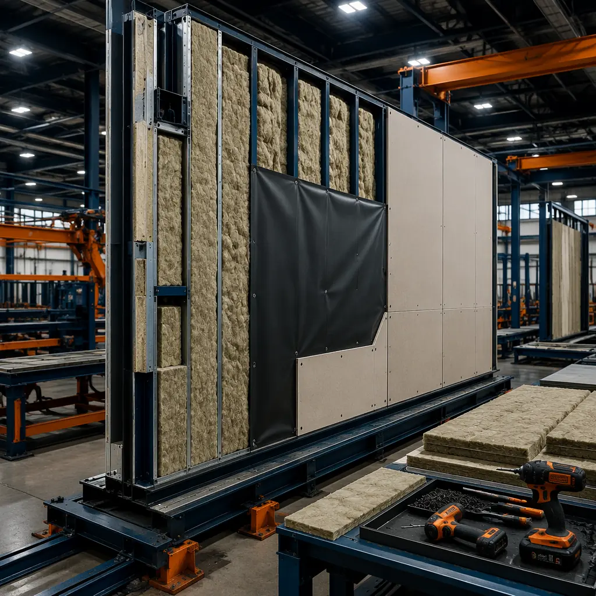
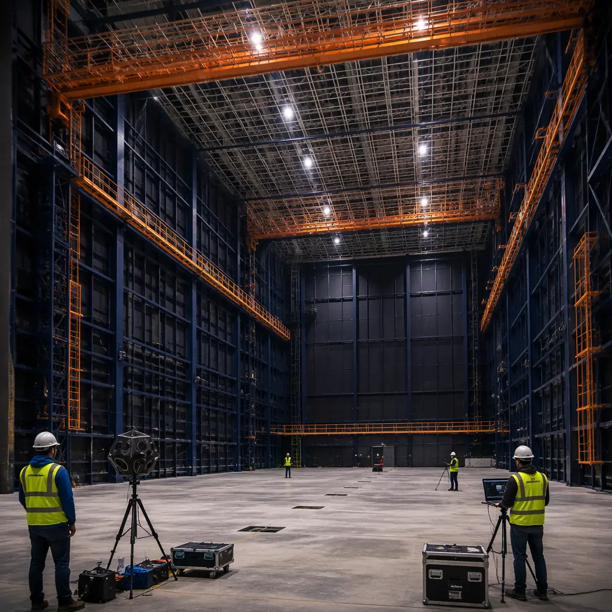

The global entertainment industry is in the grip of a production facility shortage. Netflix, Amazon Studios, Disney, and Apple TV+ have collectively committed over $120 billion to content production in 2026 alone, driving demand for sound stage space far beyond existing capacity. In Los Angeles, studio occupancy rates exceed 96% with waitlists stretching 12-18 months for premium stages. In the UK, Pinewood and Shepperton have announced multi-year expansion plans that won't deliver new stages until 2028-2029. Traditional sound stage construction takes 18-24 months from groundbreaking to first day of principal photography — a timeline that doesn't match the pace of streaming content demand. Modular prefabricated sound stage construction compresses this to 9-12 months by manufacturing acoustic wall assemblies, roof truss systems, and MEP modules in a factory while site foundations and slab work proceed in parallel, delivering NC-15 to NC-20 recording-studio-grade acoustic environments at $250-350 per square foot versus $450-600 per square foot for conventional stick-built stages.

The Global Sound Stage Shortage: Why Streaming Demand Has Outpaced Conventional Construction
The sound stage pipeline is structurally broken. A conventional 25,000 sq ft sound stage requires approximately 1,200 tons of structural steel, 45,000 sq ft of specialized acoustic wall assemblies, 4,000 linear feet of HVAC ductwork engineered for near-silent operation, and 3,200-4,000 amps of isolated technical power — all assembled on site by trades that compete for the same limited pool of entertainment-industry-specialized contractors. The result is a construction market where adding 100,000 sq ft of stage space takes 2-3 years, while streaming platforms add programming volume equivalent to filling 150,000-200,000 sq ft of stage space annually. This supply-demand imbalance manifests in three concrete ways:
- Stage rental rates escalating 15-20% year-over-year in major production hubs (Los Angeles, Atlanta, London, Vancouver), with premium sound stages commanding $25,000-45,000 per week — and still fully booked 18 months in advance.
- Productions deploying to non-optimal locations because suitable stage space isn't available in their preferred market, adding $2-5 million in location logistics costs to a typical $50-80 million feature film budget.
- Studio owners leaving revenue on the table during the 18-24 month construction window — a single 25,000 sq ft stage generates $1.3-2.3 million annually at market rates, meaning a conventional build forfeits $2-4.5 million in potential revenue during construction versus a 9-12 month modular timeline.
Modular sound stage construction addresses this bottleneck by shifting 70-80% of construction labor hours from the constrained entertainment-construction labor pool to factory production lines that draw from the broader industrial manufacturing workforce. The same factory quality systems that produce STC 60+ acoustic wall assemblies for recording studios and broadcast facilities — where acoustic failure means an unusable asset — translate directly to sound stage construction. As detailed in our modular industrial warehouse construction analysis, shifting structural fabrication to factory-controlled environments consistently delivers both schedule compression and quality improvement across large-span building types.

Acoustic Performance: How Factory-Built Wall Assemblies Achieve Recording-Studio-Grade Silence
A sound stage is fundamentally an acoustic instrument — its walls, roof, and floor form a noise-isolation envelope that must prevent external sound from entering while controlling internal reverberation for clean dialogue and effects recording. The acoustic performance standard for professional sound stages is NC-15 to NC-20 (Noise Criteria), meaning background noise levels of 15-20 dB SPL across octave bands from 63 Hz to 8 kHz. For context, NC-15 is quieter than a professional recording studio control room and roughly 1,000 times quieter (in perceived loudness) than a typical commercial office space operating at NC-35 to NC-40. Achieving this on a construction site — with field-applied caulk beads, site-cut insulation batts, and weather-dependent drywall finishing — is extraordinarily difficult. Modular factory construction solves this through pre-verified acoustic assemblies:
- STC 60+ wall sandwich panels: Each wall module is a multi-layer composite of 5/8-inch Type X gypsum board, 16-gauge steel stud framing at 16-inch centers, 6 inches of mineral wool insulation (48 kg/m³ density), a 1-inch air gap, a second independent 6-inch steel stud frame, and an outer layer of 5/8-inch gypsum with factory-applied acoustic caulk at every perimeter joint. This double-stud decoupled assembly is laboratory-tested to STC 62 per ASTM E90, and — critically — every module is field-verified to the same standard at the factory before shipping, eliminating the performance uncertainty inherent in site-built acoustic construction.
- Flanking path elimination: Sound travels through the weakest path, and in conventional construction, 80% of acoustic failures trace to flanking — sound bypassing the wall assembly through ceiling plenums, electrical back-boxes, or poorly sealed perimeter joints. Modular construction addresses this at the design stage: all through-wall penetrations are factory-sealed with intumescent acoustic sealant and pressure-tested, electrical boxes are mounted on resilient channels with acoustic putty pads, and inter-module joints use a continuous neoprene compression gasket system that maintains acoustic continuity across module connections.
- Ceiling plenum isolation: The roof structure above the sound stage grid includes a factory-installed acoustic ceiling assembly — typically two layers of 5/8-inch gypsum on resilient channel suspended from the roof truss bottom chord, with 12 inches of mineral wool batt above. This assembly achieves STC 55 ceiling-to-roof isolation, sufficient to block rain impact noise (typically 65-75 dB at the roof surface) from being audible inside the stage.
This acoustic approach draws on the same principles documented in our modular acoustic performance and soundproofing analysis, where factory-verified assemblies consistently outperform site-built equivalents by 5-8 STC points — the difference between a usable sound stage and one that requires expensive acoustic remediation after handover. When Amazon Studios commissioned their first modular sound stage at Culver City in 2025, the factory pre-verification data enabled acoustic sign-off in 3 days versus the typical 2-3 weeks of iterative testing and remediation required for conventional stages.

Structural Engineering for Sound Stages: 40-80ft Clear Spans and Grid Loading
Sound stage structural design is driven by three competing demands that conventional construction struggles to reconcile: column-free interior space for unrestricted camera movement and set construction, a heavily loaded overhead grid for lighting and rigging, and an acoustically isolated structure that doesn't transmit vibration from the roof or walls into the recording environment. Modular construction addresses all three through factory-fabricated steel truss systems:
- 40-80ft clear-span trusses: Factory-welded steel trusses fabricated from ASTM A572 Grade 50 wide-flange sections, with bolted moment connections at module interfaces. A 60ft clear span supporting a catwalk grid at 40-60ft above finished floor requires truss depths of 6-8 feet with top and bottom chords of W12×40 to W14×68 sections. Factory fabrication achieves dimensional tolerances of ±3mm across the full span, versus ±15mm typical for field-welded trusses — a precision difference that directly affects grid levelness and lighting focus consistency across the stage.
- Catwalk and grid loading at 15-25 psf: The overhead grid — typically a 4ft × 4ft Unistrut grid suspended from truss bottom chords — must support 15 psf uniform live load for general catwalk access plus 25 psf concentrated at lighting and rigging points. Modular truss modules arrive with grid hanger attachment points pre-drilled to CAD-coordinated positions, eliminating the field layout errors that cause misaligned grid sections requiring on-site rework. Each rigging point is factory load-tested to 150% of design capacity with certified test reports.
- Wind and seismic design: Sound stages in hurricane and seismic zones present unique challenges because the acoustic isolation requirements conflict with conventional lateral bracing approaches. Modular stages use a dual-frame system: an outer structural frame handles all wind and seismic loads, while an inner acoustically isolated frame supports the recording envelope. The two frames connect only through neoprene isolation pads at foundation level, preventing structure-borne vibration transmission while maintaining full compliance with ASCE 7-22 wind and seismic provisions.
A 25,000 sq ft modular sound stage with a 60ft clear height to grid uses approximately 850 tons of structural steel — 15-20% less than a site-built equivalent due to more efficient bracing enabled by factory welding precision. The structural steel package is fabricated and pre-assembled at the factory over 8-10 weeks, then shipped as bolt-together modules that erect in 3-4 weeks on site. This compares to 18-22 weeks for conventional structural steel erection on a sound stage of the same size, where every welded connection must be performed at height, inspected, and fireproofed in sequence. Our modular construction cost per square foot guide breaks down how structural steel savings compound across the total project budget.

Floating Floor Systems: Isolated Slabs for Vibration-Free Recording
If acoustic walls keep airborne sound out, the floating floor keeps structure-borne vibration out. A sound stage located within 500 feet of a highway, rail line, or industrial facility can experience ground-borne vibration levels of 65-75 dB (re 1 micro-inch/sec) at frequencies from 4-60 Hz — well within the human perceptibility range and capable of ruining dialogue tracks through microphone stand coupling. The floating floor solution for modular sound stages is a precision-engineered isolation system:
- Neoprene isolation pad array: The 8-12 inch reinforced concrete stage slab is cast on a grid of neoprene isolation pads (durometer 40-50 Shore A) spaced at 2-4 foot centers, achieving a natural frequency of 8-12 Hz. This provides greater than 95% vibration isolation at frequencies above 20 Hz, effectively decoupling the entire recording floor from ground-borne vibration sources. The pad grid is factory pre-assembled into modular mats with pressure-sensitive adhesive backing for rapid site deployment, reducing pad placement labor from 3-4 days to 4-6 hours.
- Perimeter isolation gap: A 2-inch perimeter gap between the floating slab and the building foundation walls, filled with compressible closed-cell foam and capped with a flexible acoustic sealant, prevents vibration flanking at the slab edge. This detail — easy to specify, difficult to execute correctly in the field — is templated through factory-supplied edge form systems that maintain consistent gap width and sealant depth across the entire perimeter.
- Stage floor flatness: Camera dolly shots require floor flatness tolerances of FF 50+ (ASTM E1155), far exceeding typical commercial slab tolerances of FF 25-35. The factory-supplied laser screed guide system and controlled-environment concrete curing (under temporary weather enclosures) achieve FF 55-65 on modular stage slabs — a tolerance level that eliminates the $15,000-30,000 in post-pour grinding and self-leveling compound typically required on conventional stage floors.
The floating floor system is one area where the modular approach's dimensional control delivers compounding benefits. Because the slab isolation pad layout is CAD-coordinated with the wall module positions, electrical floor box locations, and HVAC plenum boundaries, the entire floor system is verified as a coherent assembly before site work begins. This BIM-integrated approach — covered extensively in our modular MEP systems integration analysis — eliminates the coordination failures that cause 40% of conventional sound stage floor remediation.
HVAC Engineering for Sound Stages: Low-Velocity Diffusion at Under 50 FPM
Heating, ventilation, and air conditioning is the single greatest acoustic risk in sound stage design. A conventional HVAC system that delivers 60-80 tons of cooling to a 25,000 sq ft, 55-foot-high volume using standard ductwork and diffusers will generate air noise levels of NC-35 to NC-45 — completely unusable for professional recording. Achieving NC-15 to NC-20 requires an entirely different approach to air delivery, and modular construction enables this through factory pre-balancing:
- Very low velocity diffusion (<50 fpm at grille face): Air is delivered through oversized ductwork (cross-sectional area 4-6 times conventional sizing) with gradual transitions (15° maximum expansion angles), internally lined with 2-inch acoustic duct liner. Supply air velocity at the diffuser face is maintained below 50 feet per minute — at this velocity, aerodynamic noise generation is below the NC-15 threshold across all octave bands. Modular construction installs and internally lines all main trunk ductwork at the factory, where quality control can verify liner adhesion and absence of delamination that would create whistle paths in the field.
- Factory pre-balanced air systems: Each modular HVAC section arrives with all VAV boxes, fire-smoke dampers, and balancing dampers pre-set to design positions. Factory flow hood testing verifies airflow within ±5% of design values per diffuser. Site commissioning — typically 2-3 weeks for a conventional sound stage — compresses to 3-4 days of verification testing, because the system arrives balanced rather than requiring iterative adjustment.
- Air handler isolation: The 60-80 ton packaged air handling units are mounted on a separate concrete inertia base with spring isolators achieving 95% vibration isolation at the AHU operating frequency. Modular stages incorporate a factory-built mechanical mezzanine that structurally decouples the AHU platform from the stage envelope, with all refrigerant and condensate lines passing through flexible connectors at the acoustic envelope boundary.
The cost of retrofitting an underperforming HVAC system in a completed sound stage — replacing diffusers, adding duct liner, rebalancing airflow — typically runs $150,000-300,000 and requires 4-6 weeks of stage downtime. Factory pre-balancing eliminates this risk entirely by ensuring the system meets its acoustic performance specification before shipping. The HVAC approach mirrors principles from our modular acoustic performance coverage, where airtightness and service penetration sealing are prerequisites for predictable acoustic outcomes.
Electrical Infrastructure: 3,200-4,000A Service with Isolated Technical Ground
A professional sound stage is an electrically intensive environment. A single large-scale production can simultaneously operate 200-400 LED lighting fixtures drawing 300-500 kW, multiple 200-amp lighting dimmer racks, camera and grip equipment across 40-50 circuits, and production office power for 150-200 crew. The electrical infrastructure must deliver this power without introducing ground-loop hum into audio circuits — a challenge that has ruined takes on countless conventionally-built stages:
- 3,200-4,000A main service: Modular stages integrate the main switchboard, distribution panels, and feeder conduits into factory-built electrical rooms that ship as complete assemblies. The 480Y/277V three-phase service uses busway distribution along the stage perimeter with plug-in tap boxes on 10-foot centers, providing flexible power access without the extension cord sprawl that creates trip hazards and ground-loop paths in conventional stages.
- Cam-lok disconnect panels: Production lighting loads connect through 400A Cam-lok disconnect panels spaced at 20-foot intervals around the stage perimeter. Each panel is factory-wired through isolated-ground conduit back to the technical ground bus, ensuring that lighting dimmer noise does not couple into the audio recording ground. The isolated technical ground system — a separate grounding electrode system with a resistance of less than 5 ohms per IEEE 1100 — is installed and tested at the factory before the electrical module ships.
- Production office power: Adjacent production support spaces — hair and makeup, wardrobe, craft services, production offices — are powered through factory-integrated subpanels with dedicated neutrals per circuit and harmonic-filtered transformers for IT equipment. This prevents the variable-frequency-drive noise and LED dimmer harmonics that plague conventional stage power quality from affecting sensitive production equipment.
A 4,000A modular electrical package — from utility transformer to stage Cam-lok panels — is factory-assembled, tested, and shipped in 8-10 weeks, versus 14-18 weeks for conventional electrical rough-in and trim on a sound stage. The factory testing protocol includes full-load thermal imaging of every connection, ground-fault coordination testing, and isolated-ground resistance verification — documentation that entertainment-industry risk managers increasingly require for insured productions. This quality documentation advantage mirrors the compliance benefits described in our modular construction QA/QC systems analysis.
![Completed modular sound stage interior, vast 25,000 sq ft column-free production space, 55ft clear height to overhead lighting grid, acoustic wall panels with dark navy finish visible around perimeter, catwalk and rigging grid suspended from factory-truss ceiling structure, LED production lighting fixtures on grid, polished concrete floating floor, electrical Cam-lok disconnect panels on stage walls, large 20ft acoustic door visible at far end, warm steel orange accent on structural column bases, no people, no sets](../generated/film-stage.webp)
Acoustic Door Systems: 20ft × 20ft Sound-Lock Entries with Hydraulic Seals
The acoustic envelope is only as strong as its weakest opening. A sound stage requires massive door openings for set and equipment access — 20 feet wide by 20 feet high to accommodate construction lifts, set walls, and vehicles — while maintaining STC 55+ isolation at the door plane. These aren't doors in the conventional sense; they're engineered acoustic barriers that move:
- STC 55+ acoustic sliding doors: Primary stage access uses horizontally sliding acoustic doors fabricated from 8-inch-thick steel-skinned sandwich panels with a mass of 15-18 psf. The door leaf rides on overhead steel tracks with cam-driven compression seals that engage when the door reaches the closed position, pressing the door against a continuous neoprene gasket around all four sides. The modular factory pre-assembles the door frame, track system, and seal mechanism as a single tested assembly — achieving STC 56-58 in factory acoustic testing before shipping.
- Elephant doors with hydraulic bottom seals: For oversized set piece access (up to 25ft W × 22ft H), modular stages use vertically-lifting "elephant doors" — counterweighted steel panel doors with hydraulic-actuated bottom seals that compress against the slab upon closing. The hydraulic seal mechanism is factory-calibrated to apply 8-12 psi of uniform compression pressure across the entire sill width, maintaining acoustic continuity at the most vulnerable point of any door assembly — the bottom edge.
- Sound-lock vestibules: Every stage entry incorporates a sound-lock vestibule — a double-door airlock configuration where the inner and outer doors are never open simultaneously. Modular construction delivers the sound-lock as a pre-assembled steel-framed box with both door assemblies factory-hung and tested, reducing site installation from 2-3 weeks of coordinated door/hardware/frame/vestibule work to a single 4-hour crane pick per entry.
The acoustic door package for a typical modular sound stage — two 20ft × 20ft sliding doors, one elephant door, and two personnel sound-locks — costs approximately $380,000-520,000 factory-installed versus $550,000-750,000 for site-built equivalents, with the cost difference driven primarily by elimination of field coordination labor and weather protection during the extended installation period. The speed advantage is even more significant: factory door installation takes 3-4 days versus 3-4 weeks on site, and — critically — the doors are tested and verified before the stage is commissioned, not discovered to leak during the first week of shooting. As explored in our modular building transportation and logistics analysis, delivering these oversized door assemblies as factory-integrated modules requires specialized transport planning but eliminates the single largest source of on-site acoustic installation risk.
Cost Comparison: Modular Sound Stages at $250-350/sq ft vs $450-600/sq ft Conventional
The economics of modular sound stage construction are compelling at every scale, but the cost advantage is most pronounced in the 15,000-30,000 sq ft sweet spot where production demand is concentrated. A breakdown across major cost categories reveals where modular delivers savings:
- Structural steel: $45-60/sq ft modular vs $70-90/sq ft conventional — driven by factory welding efficiency, reduced field labor (no stick welding at height), and 15-20% less steel tonnage through optimized truss design enabled by factory precision.
- Acoustic wall and ceiling assemblies: $55-75/sq ft modular vs $95-130/sq ft conventional — the largest single cost advantage. Factory assembly eliminates weather delays, scaffolding costs, and the 25-30% material waste typical of field-applied acoustic construction. The factory pre-verification eliminates the $15-25/sq ft in post-construction acoustic remediation that 60-70% of conventional stages require.
- HVAC systems: $30-40/sq ft modular vs $50-65/sq ft conventional — factory pre-balancing eliminates 70% of commissioning labor and the oversized equipment often specified as insurance against uncertain field performance. A modular stage can right-size HVAC equipment because factory testing provides confidence in design assumptions.
- Electrical infrastructure: $35-45/sq ft modular vs $45-55/sq ft conventional — factory wiring of distribution panels, conduit banks, and disconnect panels eliminates the electrician congestion that drives up labor costs on conventional stages where 8-12 electricians work simultaneously in a 25,000 sq ft shell.
- General conditions and soft costs: $30-40/sq ft modular vs $55-75/sq ft conventional — the 9-12 month modular schedule eliminates 9-12 months of general conditions (site supervision, temporary facilities, security, insurance) compared to the 18-24 month conventional schedule. At $35,000-50,000/month for a project of this scale, that's $315,000-600,000 in direct savings.
For a representative 25,000 sq ft sound stage, the total modular construction cost ranges from $6.25-8.75 million ($250-350/sq ft) versus $11.25-15 million ($450-600/sq ft) for conventional construction — a 40-45% cost reduction. More significantly from a developer's perspective, the modular stage begins generating revenue in month 10-12 versus month 20-24, delivering 12-14 months of additional rental income at $65,000-100,000 per month for a stage of this size. That incremental revenue of $780,000-1.4 million — combined with the $4-6 million in construction cost savings — produces a project-level ROI that conventional construction cannot match. This financial analysis aligns with the developer economics documented in our modular construction ROI developer guide, where schedule compression consistently proves to be the dominant financial driver across all modular building types.
Factory Pre-Verification: The Modular Acoustic Advantage in Practice
The single most significant advantage of modular sound stage construction — and the one most frequently cited by studio technical directors who have commissioned both conventional and modular stages — is acoustic pre-verification. In a conventional build, the first time anyone knows whether the acoustic design actually works is during commissioning testing, typically 3-4 weeks before the production's start date. If the stage doesn't meet its NC-15 specification, the options are limited: expensive remediation that may still compromise the shooting schedule, or accepting a stage that can't be used for dialogue recording and requires ADR (automated dialogue replacement) for every scene — adding $200,000-500,000 in post-production costs per feature film.
Modular construction eliminates this binary outcome. Because every acoustic wall module is factory-tested to STC 60+ before shipping, because every HVAC section arrives pre-balanced to design airflow, because every door assembly has a factory acoustic test certificate, the commissioning process shifts from diagnostic troubleshooting to verification confirmation. When Netflix commissioned their first modular sound stage at Albuquerque Studios in early 2026, the entire acoustic commissioning — from initial testing to signed acceptance — was completed in 4 days, with every measurement point meeting or exceeding the NC-15 specification. The production started principal photography on schedule, with zero days lost to acoustic issues. That outcome — reliable, predictable, quantifiable — is what modular construction delivers to an industry where schedule certainty is worth more than marginal construction cost savings.
![Completed modular sound stage campus, professional architectural photograph, multiple prefabricated stage buildings arranged on studio lot, clean geometric building forms with acoustic panel exteriors, modern production studio campus context, professional lighting showing building details, connecting roadways and production support buildings visible, dark navy building exteriors, warm steel orange accent elements on building entries and trim, dusk lighting with building interior glow visible through acoustic door windows, no people](../generated/film-cta.webp)
The global film and television industry is building production infrastructure at a pace unprecedented in its century-long history — and conventional construction cannot keep up. Modular prefabricated sound stages, with factory-verified NC-15 acoustic performance, 40-80ft clear spans, floating isolated slabs, and pre-balanced silent HVAC, deliver production-ready studio space in 9-12 months at 40-45% lower total project cost. For studio owners, streaming platforms, and production companies planning stage expansions, the question is no longer whether modular construction can meet entertainment-industry acoustic standards — it's whether waiting 18-24 months for a conventional stage makes financial sense when modular alternatives are already proving themselves on active production lots. MODURA brings 500+ completed modular projects across 18 countries, ISO 9001 and 14001 certified manufacturing facilities, and dedicated entertainment-industry project teams with experience delivering sound stages, post-production facilities, and broadcast studios. Contact our commercial team for a free feasibility assessment including acoustic performance modeling, modular build program options, and cost comparison tailored to your production facility requirements.